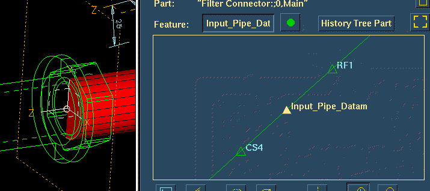
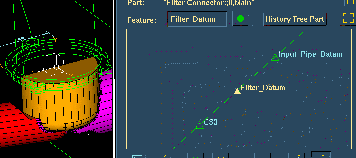
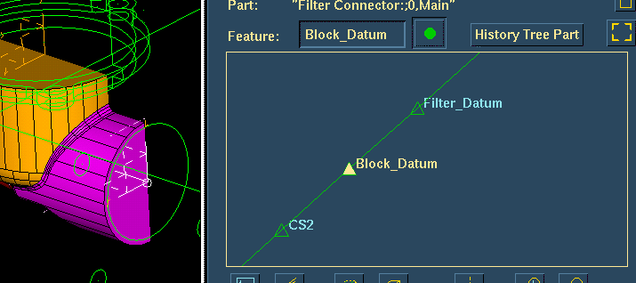

| Next Page | Previous Page | First Page |

Shell the part 2mm wall thickness, delete the highlighted surfaces.
"Hollow or shell out the part."


Use the History Access form to Rollback to the step before the Reflect.
"Need to add another input port
but this also needs to have a constant wall thickness.
Freeze the reflect and shell
operations, and insert the new port."

Add a new Coordinate System relative to the top coordinate system.
Coordinate System, pick top system, Translate, 0 25 60, <Done>
"Add a new datum relative to the Filter datum."



Use the History Access form to rename the Coordinate Systems as shown. (Hint:- Use the Select button in the top right corner of the form.)
"Document the design as the design developes. Name the Datums."